نموذج أولي متكامل لدعم قرار تجنب التصادم في الفضاء
نموذج بحثي أولي يجمع بيانات خطر اقتراب حقيقية من وكالة الفضاء الأوروبية (ESA) مع تتبع بصري مُحاكى على متن القمر الصناعي وتخطيط مناورة تجنب واستعادة موفرة للوقود. يتنبأ النظام بالاقتراب الذي يستحق الاهتمام، ويرصد التهديد، ويتجنبه، ثم يعيد القمر إلى مسار مهمته.
تنبؤ→رصد→تجنب→استعادة
نموذج بحثي أولي، وليس برنامج طيران معتمدًا. حقيقي بيانات ESA CDM · مُحاكى صور الكاميرا والمناورات والاستعادة.
غرفة التحكم: إعادة عرض المهمةT−0.0 hمراقبة
بيانات الخطر من ESA حقيقي
الوقت حتى TCA
—
عدد رسائل CDM
—
آخر خطر مُبلَّغ (log10 Pc)
—
احتمال التنبيه بالتعلم الآلي
—
الخطر النهائي المتوقع
—
تفعيل الرصد
—
المشهد المداري مُحاكى على هندسة حقيقية
القمر الاسمي (المرجعي)تجنب فقطدفعتان (يبقى فرق طوري)خطة الدفعات الثلاث المختارةلحظة TCA / الحطام
الكاميرا الملونة (RGB) على متن القمر مُحاكى
ثقة YOLO
—
المسار
—
الاتجاه (az, el)
—
المعدل الزاوي
—
الإطار
—
المسافة
لا تُقاس (كاميرا واحدة)
كل قيمة معروضة مأخوذة من نتائج محفوظة: رسائل CDM حقيقية، ومخرجات نماذج مُجمَّدة، وملفات محسوبة مسبقًا للمناورة وMonte Carlo والكاميرا. المتصفح يحرّك العرض بين هذه القيم فقط. تسلسل الكاميرا اقتراب مُحاكى توضيحي من تجربة التتبع، وخطأ الاتجاه المَقيس فيه هو ما يُستخدم في حساب عدم اليقين للمناورة.
تُتوقَّع آلاف الاقترابات القريبة بين الأقمار الصناعية والحطام الفضائي كل أسبوع. يتلقى المشغّلون رسائل بيانات الاقتراب (CDM)، لكن الخطر النهائي لا يتضح غالبًا إلا قرب لحظة أقرب اقتراب (TCA)، بينما يجب التحضير للمناورة قبل ذلك بأيام. وكل مناورة تستهلك وقودًا وتُبعد القمر عن المدار الذي تحتاجه مهمته. لذلك يجب أن يجيب نظام دعم القرار المفيد عن أربعة أسئلة: أي الأحداث تستحق الاهتمام؟ وأين التهديد؟ وكيف نتجنبه بأقل وقود؟ وكيف نعود إلى مدار المهمة بعد ذلك؟
كيف يعمل النظام؟
1 · التنبؤ حقيقي
من تاريخ رسائل CDM المتاحة قبل TCA بيومين، نحتفظ بآخر خطر مُبلَّغ بوصفه خط أساس قويًا، ويضيف نموذج صغير (ExtraTrees) تنبيهًا للحالات الحدّية (هجين محروس).
2 · الرصد مُحاكى
يوجّه التنبيه كاميرا ملونة مُحاكاة على متن القمر نحو التهديد. يكتشف كاشف YOLO المدرَّب الجسم، ويقيس متتبِّع Kalman اتجاهه ومعدله الزاوي. كاميرا واحدة تعطي الاتجاه، لا المسافة بموثوقية.
3 · التجنب مُحاكى
تُختبر 1,830 دفعة مرشحة على الهندسة الحقيقية للاقتراب، ويُختار أرخص حل يحقق مسافة مرور ≥ 1 km واحتمال تصادم Pc ≤ 10⁻⁶، ثم يُتحقق منه بتكامل مداري عددي يشمل أثر J2.
4 · الاستعادة مُحاكى
بعد مرور الحطام، تعيد دفعتان إضافيتان القمر إلى الموقع الذي كان سيشغله لولا المناورة (عودة طورية)، ضمن 50 m و1 mm/s.
تتبع بنية المناورة تصاميم منشورة للتجنب ثم العودة (ثلاث دفعات: دفعة تجنب ودفعتا عودة)، وكذلك عائلات نماذج التنبؤ التي اختبرناها منشورة. إسهام المشروع هو دمج هذه المكونات وتقييمها بأمانة في سلسلة واحدة متكاملة، بما في ذلك أثر خطأ الرصد المَقيس وخطأ تنفيذ الدفعات على الأمان والاستعادة معًا.
ما الحقيقي وما المُحاكى؟
الجزء
الحالة
التفاصيل
بيانات خطر الاقتراب (CDM)
حقيقي
مجموعة بيانات تحدي تجنب التصادم من ESA Kelvins (CC BY 4.0): حدث تدريب و حدث اختبار رسمي.
التنبؤ بالخطر ودرجاته
حقيقي
دُرِّبت النماذج وضُبطت على ملف التدريب فقط، ثم جُمِّدت وقُيِّمت مرة واحدة على مجموعة الاختبار الرسمية.
هندسة الاقتراب وعدم اليقين
حقيقي
متجه المرور والسرعة النسبية وعدم اليقين والمدار، من آخر رسالة متاحة قبل TCA بيومين.
صور الكاميرا والكشف بـ YOLO والتتبع
مُحاكى
صور اصطناعية لكاميرا ثقبية، إذ لا توفر ESA أي صور. مخرجات الكاشف والمتتبِّع حقيقية من نماذجنا على هذه الصور.
المناورات ونتيجة أقرب اقتراب والاستعادة
مُحاكى
تخطيط بنموذج Clohessy–Wiltshire مع تحقق بالتكامل العددي (two-body + J2). لم يُنفَّذ أي مناورة على قمر حقيقي.
عدم اليقين
مُحاكى
محاكاة Monte Carlo بخطأ الاتجاه المَقيس في تجربة التتبع، إضافة إلى أخطاء تنفيذ الدفعات والملاحة.
النتائج
التنبؤ بخطر التصادم حقيقي
الدرجة الرسمية لـ ESA: خط الأساس (آخر خطر) على الاختبار
تطابق القيمة المنشورة 0.694 · الأقل أفضل
النموذج المختار في الإصدار الثاني: الهجين المحروس (اختبار)
أفضل من خط الأساس بـ ، لكن الفرق ليس ذا دلالة إحصائية
F2 للنموذج المختار
خط الأساس
أحداث اختبار غيّرها حارس التعلم الآلي
منها خطر مرتفع فعلًا · إنذارات كاذبة
اختبرنا تجربة مُجمَّدة: خط الأساس (آخر خطر)، ومصنِّفات، ونموذجًا على مرحلتين (مصنِّف ← انحدار)، ونماذج هجينة محروسة، وانحدارًا مباشرًا للخطر، وسلسلة قواعد عتبات أُعيد ضبطها، وشبكة زمنية (GRU) دُرِّبت على معالج رسومي. طُوِّرت كل تجربة بتحقق متقاطع على مستوى الحدث من ملف التدريب فقط، ثم جُمِّدت إعداداتها وقُيِّمت مرة واحدة على مجموعة الاختبار الرسمية. اختير النموذج بناءً على التحقق، لا على الاختبار.
نتيجة أمينة: آخر خطر مُبلَّغ يصعب التفوق عليه، تمامًا كما في مسابقة ESA الأصلية. يحقق الهجين المحروس المختار تحسنًا صغيرًا (فترة الثقة 95% للتغير في الدرجة: من إلى ). أما نماذج المرحلتين والانحدار المباشر وGRU فكانت أسوأ من خط الأساس في التحقق والاختبار.
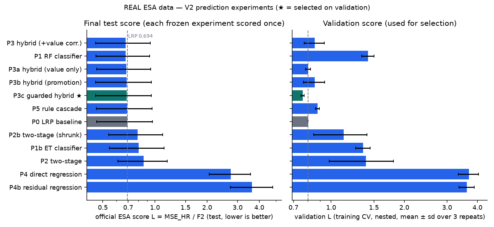
الدرجة الرسمية على الاختبار (يسار) والتحقق (يمين). ★ تعني النموذج المختار بناءً على التحقق.
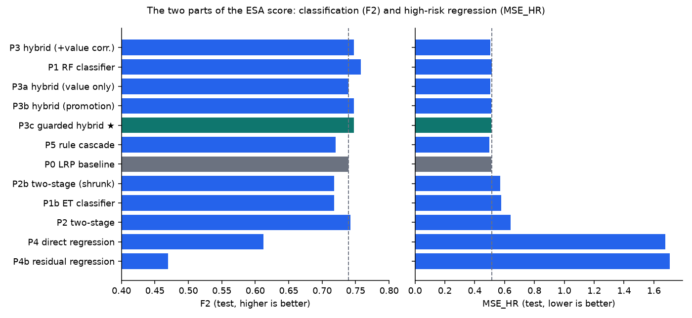
جزءا الدرجة الرسمية.
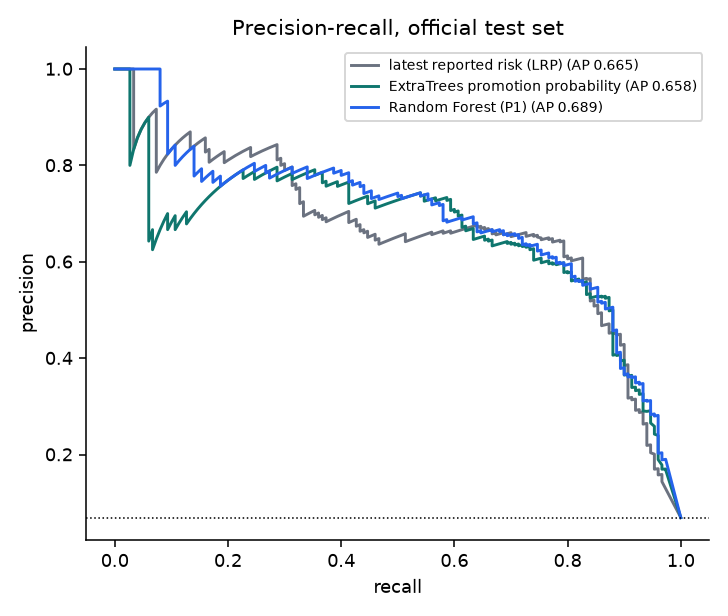
الدقة والاستدعاء على مجموعة الاختبار الرسمية.
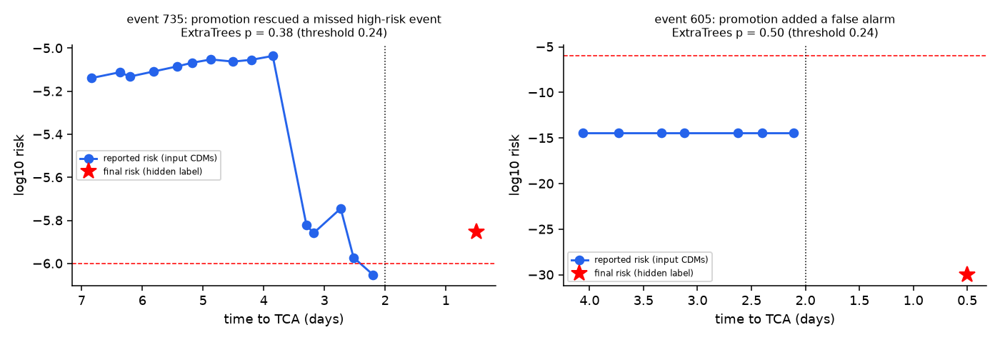
تاريخ رسائل حقيقي: حدث أنقذه الحارس بحق، وإنذار كاذب أضافه.
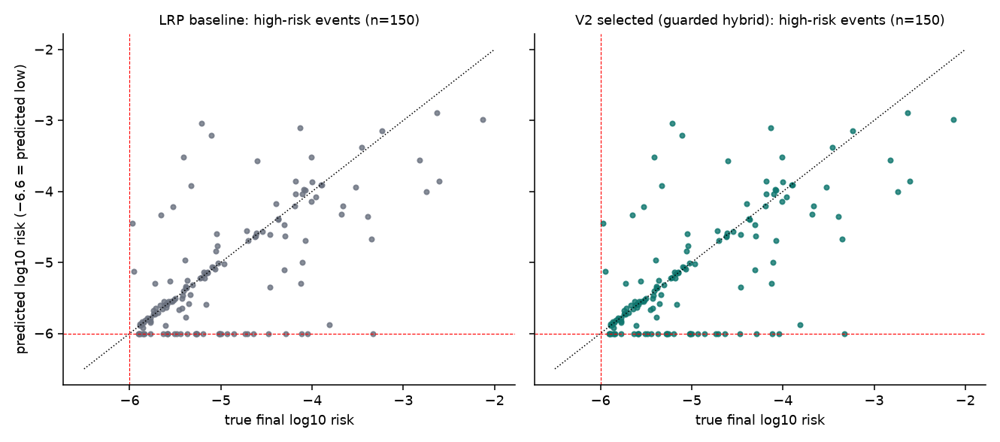
الخطر النهائي المتوقع مقابل الحقيقي لأحداث الخطر المرتفع في الاختبار.
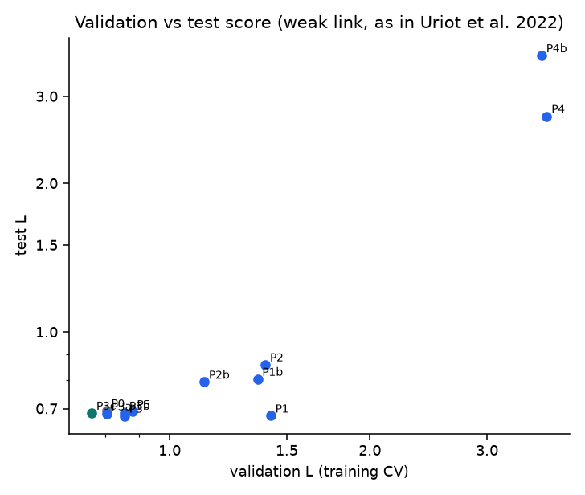
الارتباط بين درجتي التحقق والاختبار ضعيف، كما ذكر منظمو المسابقة.
مناورة التجنب والاستعادة مُحاكى على هندسة حقيقية
أحداث خُطِّطت لها مناورة (تنبيهات احتاجت مناورة)
جميعها ممكنة
آمنة عند أقرب اقتراب (two-body + J2)
بعد التحقق العددي؛ خطط النموذج التحليلي وحده:
عادت ضمن 50 m / 1 mm/s
أقصى خطأ موضع
الوسيط لـ Δv: تجنب + استعادة
التجنب + الاستعادة
النتيجة الرئيسية للإصدار الثاني: استعادة مسار المهمة تكلف وقودًا أكثر من تجنب الحطام نفسه. عندما تُنفَّذ دفعة التجنب قبل TCA بيومين، ينجرف القمر نحو كيلومترين عن موقعه الاسمي. والعودة خلال نحو بعد TCA تحتاج في الوسيط إلى ضعف Δv التجنب. ومن دون استعادة (الإصدار الأول) يبقى القمر على بعد من موقعه الاسمي بعد يومين من TCA. أما العودة بدفعتين فتستعيد شكل المدار لكنها تترك فرقًا طوريًا وسيطه .
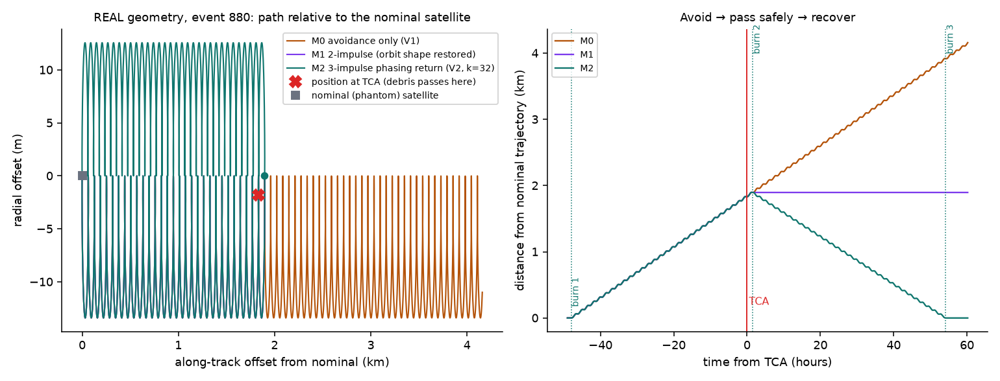
الهندسة الحقيقية للحدث 880: تجنب ← عبور آمن ← استعادة.
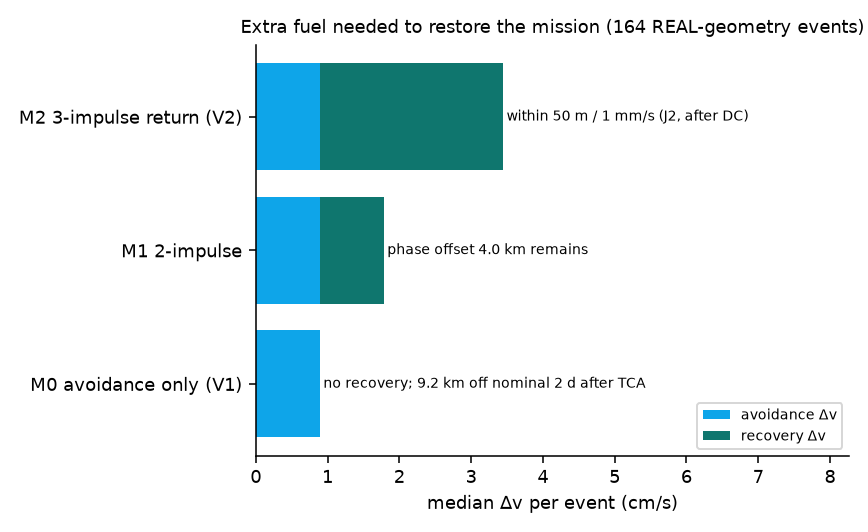
الوقود الإضافي اللازم لاستعادة مسار المهمة.
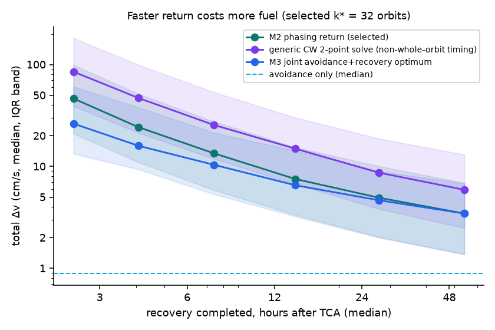
العودة الأسرع تكلف وقودًا أكثر، والدفع عند مدارات كاملة (العودة الطورية) أرخص بكثير من الانتقال العام بين نقطتين.
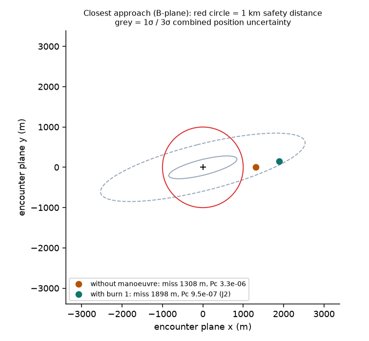
أقرب اقتراب مع المناورة وبدونها (الحدث 880).
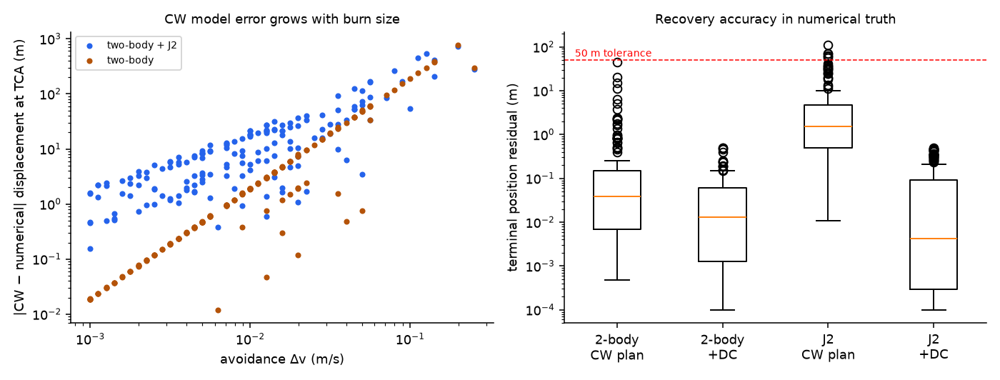
التخطيط التحليلي السريع مقابل التكامل العددي الدقيق، ودقة الاستعادة.
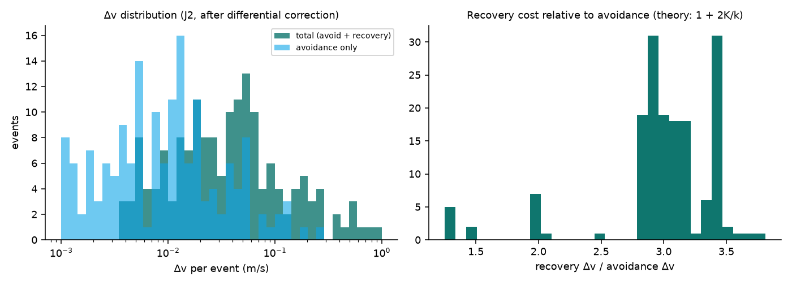
توزيع Δv لكل حدث.
عدم اليقين: ماذا لو لم تكن الكاميرا مثالية؟ مُحاكى
شملت محاكاة Monte Carlo حدثًا، بواقع محاولة لكل إعداد. خطأ اتجاه الكاميرا مأخوذ من تجربة التتبع: المعتاد ، ومع حالة فشل التتبع ، على مسافة 10 km. لكل دفعة خطأ في المقدار 2% وفي الاتجاه 1°، وتعتمد دفعات الاستعادة على ملاحة القمر نفسه (1 m, 0.5 mm/s). ويفترض هامش الأمان k·σ أن الجسم أقرب مما قُدِّر.
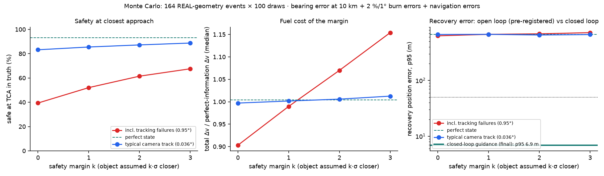
هامش الأمان مقابل نسبة الأمان وΔv وخطأ الاستعادة.
الاستعادة مع أخطاء الدفع والملاحة
مع أخطاء دفع 2% / 1°، لم تحقق العودة "المفتوحة" المسجَّلة مسبقًا (الدفعتان 2 و3 فقط) حد التسامح 50 m / 1 mm/s إلا في من المحاولات، لأن الخطأ الصغير ينجرف نحو يومين. أضافت تجربة جديدة معلنة توجيهًا مغلق الحلقة: تحديد المدار من سلسلة قراءات GNSS، وثلاثة تصحيحات صغيرة للانجراف، وتصحيحًا أخيرًا. وهذا هو تصميم الاستعادة النهائي في الإصدار الثاني.
توجيه مفتوح (مسجَّل مسبقًا)
وسيط الخطأ
توجيه مغلق الحلقة (النهائي)
وسيط الخطأ · زيادة Δv بنسبة
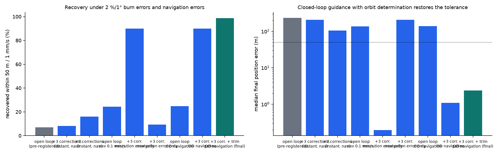
خطأ الملاحة في السرعة كان العامل المحدِّد، وتحديد المدار مع تصحيحات صغيرة يعيد تحقيق حد التسامح.
من الإصدار الأول إلى الثاني
الإصدار الأول
الإصدار الثاني
التنبؤ
لم يتفوق أي نموذج على خط الأساس (درجة Random Forest: 0.967)
الهجين المحروس مقابل خط الأساس : تحسن صغير أمين وغير دال إحصائيًا، مع مقارنة أوسع (مرحلتان، انحدار، GRU).
المناورة
تجنب فقط، ويبقى القمر خارج مداره
تجنب ثم عبور آمن ثم عودة طورية إلى المسار الاسمي (ثلاث دفعات)
التحقق
نموذج Clohessy–Wiltshire
تحقق عددي (two-body + J2) لكل خطة مع إصلاح تلقائي
عدم اليقين
التجنب فقط
التجنب والاستعادة: أخطاء الرصد والتنفيذ والملاحة
العرض
صفحات خطوة بخطوة
غرفة تحكم تفاعلية، وسيناريوهات إخفاق، وثنائية اللغة
القيود
التنبؤ: لا توجد في التدريب إلا 66 حدثًا عالي الخطر، والتحسن على خط الأساس صغير وغير دال إحصائيًا، والارتباط بين التحقق والاختبار ضعيف.
الكاميرا: الصور اصطناعية، فهناك فجوة بين المحاكاة والواقع. الكاميرا الواحدة تقيس الاتجاه لا المسافة بموثوقية، وتقدير المسافة من الحجم الظاهري استكشافي فقط. والتسلسل البصري أبطأ وأقرب من اقتراب حقيقي سرعته نحو 12 km/s.
الديناميكا: التخطيط بنموذج Clohessy–Wiltshire (مدار دائري)، والتحقق يشمل J2 دون مقاومة الغلاف الجوي أو ضغط الإشعاع الشمسي، ويُحسب Pc بتقريب ثنائي الأبعاد للاقتراب القصير.
العتبات: قاعدة الأمان (1 km / 10⁻⁶) وحد الاستعادة (50 m / 1 mm/s) قيم تصميم تجريبية، لا متطلبات وكالات فضاء.
محاكاة Monte Carlo: تستخدم النموذج التحليلي بوصفه الحقيقة، ويُعالَج خطأ النموذج منفصلًا بخطوة التحقق العددي. ويغطي هامش الأمان خطأ الرصد فقط، فقد تفشل الخطط الأرخص بسبب خطأ تنفيذ الدفع (إضافة هامش لخطأ التنفيذ عمل مستقبلي).
لم يُنفَّذ أي مناورة على قمر حقيقي، والنظام ليس برنامج طيران.
النظام التشغيلي المستقبلي
من المستخدمين المحتملين: مشغلو الأقمار الصناعية، وأبحاث إدارة الحركة الفضائية، وأبحاث الاستقلالية على متن الأقمار. ومن الخطوات القادمة: الاختبار على صور فضائية حقيقية، وتقدير المسافة من الاتجاهات فقط عبر مناورات رصد متعمدة، ونموذج قوى أدق (مقاومة الغلاف الجوي وضغط الإشعاع)، وتخطيط متين يستخدم توزيع عدم اليقين كاملًا، وتقييم مع ملاحظات المشغّلين. النظام نموذج بحثي في مرحلة مبكرة، ولا ندّعي له مستوى جاهزية تقنية محددًا.